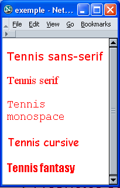
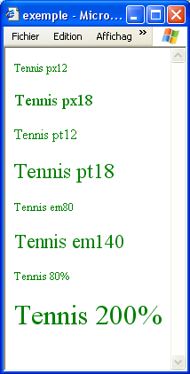
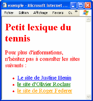
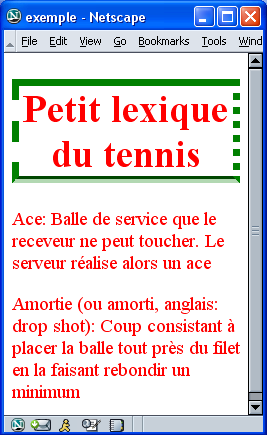

Textes
Un soin particulier est apporté à la forme du texte en définissant
le type de police, la taille des caractères ou
encore la couleur.
La taille
Pour préciser la taille des caractères, il existe plusieurs types de
mesure:
-
Le pixel (px)
- Cette taille est relative à la définition de l'écran, qui
est définie en pixels (un pixel est un point de l'écran)
-
Le point (pt)
- Cette taille que vous trouvez dans les traitements de texte
se réfère à la taille typographique. 12pt est la taille normale
d'une police.
-
Le pourcentage (%)
- Le pourcentage permet de préciser une taille relative à la
taille normale d'une police.
-
L'unité em (em)
- Cette taille correspond à un rapport à la taille normale
d'une police. 1em correspond à 100% de la taille normale de la
police, 1.4em à 140% etc.
La police
Il existe 5 familles de polices de caractères :
-
sans-serif
- Cette famille comprend les polices à caractères bâtons, les
plus lisibles à l'écran : Verdana, Arial, Arial Black, Trebuchet
MS, Geneva.
-
serif
- Ce sont les polices à empattements (serif en anglais) qui
sont en général utilisées par les journaux: Times, Times New Roman,
Georgia
-
Monospace
- Les caractères ont une largeur fixe. Ces polices servent à
illustrer les codes informatiques: Courier, Courier New, Andale
Mono
-
Cursive
- Les polices ressemblent à l'écriture manuscrite: Comic
Sans, Apple Chancery
-
Fantasy
- On trouve ici des polices stylées et décoratives rarement
utilisées dans les pages web professionnelles: Last Ninja, Impact
La couleur
En HTML, deux façons de préciser une couleur coexistent :
-
Via le nom de la couleur.
A la base en HTML, 16 couleurs possèdent un nom. Dans le
tableau qui suit, ces couleurs sont présentées en couleur de fond
avec leur nom et leur code associé :
-
Via le code hexadécimal de la couleur.
L'hexadécimal sera largement étudié dans le cours de langage
d'assemblage.
Il est pourtant intéressant pour vous de comprendre le principe
des couleurs. Votre écran, pour afficher les couleurs, fait un
mélange de trois composantes : le rouge, le vert et le bleu. Ceci
donne naissance au système de couleurs RVB (Rouge, Vert,
Bleu) ou RGB (Red, Green, Blue) en anglais.
Si on veut décrire une couleur, on doit décrire la
proportion de chacune des trois couleurs de base, sachant que le
blanc est obtenu en mélangeant la quantité maximale (symbolisée
par FF que vous comprendrez dès que vous aurez étudié
l'hexadécimal) des trois couleurs. Le noir est obtenu en mettant
la quantité minimale (00) des trois couleurs.
Quelques exemples:
Blanc s'obtient donc par #FFFFFF ce qui signifie
FF de rouge, FF de vert, FF de bleu
Noir s'obtient par #000000, vert pur par #00FF00 etc.
Vous avez compris qu'il suffit de changer un des chiffres
pour obtenir une autre couleur.
Toutes les couleurs ne sont pas Web safe et on se contentera de
combiner les 3 couleurs en utilisant les 6 quantités 00 33 66 99
CC et FF, ce qui nous donne 216 couleurs (ou 6 à la puissance 3).
Si vous voulez en savoir plus sur le sujet, consulter la
bibliographie du cours ou par exemple la page couleurs
du Web de Wikipedia.
Liste des propriétés
Rappelons-nous au départ que ces propriétés ont une valeur par
défaut. L'introduction d'une propriété modifie cette valeur par
défaut.
Ajoutons enfin qu'il existe beaucoup de différences entre les
navigateurs. Certains conseils vous seront donnés pour éviter les
mauvaises surprises. La liste des propriétés et de leurs attributs
que vous trouverez ci-dessous n'est pas exhaustive mais elle reprend
les plus élémentaires. Libre à vous de vouloir aller plus loin.
Dans certains exemples qui suivent, les propriétés ont
toujours été appliquées au sélecteur classe mais celles-ci peuvent
évidemment être appliquées à d'autres sélecteurs (h1, h2, p ...)
Propriétés portant sur les caractères.
-
font-family
-
La propriété font-family définit la
police de caractères à utiliser. Normalement, on prévoit plusieurs
polices car certaines polices ne se trouvent que sur certaines
plateformes (Windows, Linux, Mac). Les navigateurs utiliseront la
première police de la liste qui est présente sur l'ordinateur. Il
est conseillé de toujours préciser la famille générique en fin de
liste dans le cas où aucune des polices de la liste n'est
disponible. Lorsque le nom de la police est composé de plusieurs
mots, on peut le mettre entre guillemets.
| Le code HTML : |
La CSS : |
L'affichage : |
|
<p class = "sans-serif">
Tennis sans-serif</p>
<p class = "serif">
Tennis serif>
<p class = "monospace">
Tennis monospace</p>
<p class = "cursive">
Tennis cursive</p>
<p class = "fantasy">
Tennis fantasy</p>
|
.sans-serif {
font-family : verdana, arial,
sans-serif;}
.serif {
font-family : "times new roman",
georgia, serif;}
.monospace {
font-family : "andale mono",
courier, monospace;}
.cursive {
font-family : "apple chancery",
cursive;}
.fantasy {
font-family : impact, fantasy;}
|
 |
-
font-size
-
font-size peut prendre les valeurs
suivantes :
-
Une valeur numérique suivie de px sans espace qui est la
taille précise des caractères.
font-size
: 14px ;
-
Une valeur numérique suivie de % sans espace qui est la
taille relative des caractères par rapport à la taille par
défaut.
font-size : 200% ; doublera la taille
des caractères par défaut.
-
Une valeur numérique suivie de em sans espace qui est un
coefficient multiplicateur de la taille par défaut.
font-size : 1.2em ;
- Un mot-clé : xx-small (équivalent de 6,9 pt), x-small
(équivalent de 8,3pt), small (équivalent de 10pt), medium (12pt
valeur initiale), large (équivalent de 14,4pt), x-large
(équivalent de 17,28pt), xx-large (équivalent de 20,7pt).
Il est conseillé de choisir pour body un
des mots-clés comme taille de caractères et de définir toutes
autres tailles de caractères relativement à body
à l'aide de % ou em.
Il sera alors très simple de changer la taille de toute la page en
modifiant uniquement la taille assignée à body.
| Le code HTML : |
La CSS : |
L'affichage : |
|
<p class="px12">Tennis px12</p>
<p class="px18"> Tennis px18</p>
<p class="pt12"> Tennis pt12</p>
<p class="pt18"> Tennis pt18</p>
<p class="em80"> Tennis em80</p>
<p class="em140"> Tennis em140</p>
<p class="p80"> Tennis 80%</p>
<p class="p200"> Tennis 200%</p>
|
.px12 {font-size : 12; }
.px18 { font-size : 18px; }
.pt12 { font-size : 12pt; }
.pt18 { font-size : 18pt; }
.em80 { font-size : 0.8em; }
.em140 { font-size : 1.4em; }
.p80 { font-size : 80%; }
.p200 { font-size : 200%; }
|
 |
-
font-weight
-
font-weight permet de définir le niveau
de gras du caractère ; soit normal, soit
bold.
-
font-style
-
font-style peut prendre les valeurs normal, italic ou oblique.
-
text-align
-
Cette propriété sert à aligner le texte au centre, à gauche ou à
droite (center, left
,right).
-
text-decoration
-
Cette propriété permet de décorer le texte c'est-à-dire de le
surligner, le faire clignoter, ... . (underline,
overline ,blink,
line-through).
-
color
- Cette propriété sera décrite dans le point suivant.
-
@font-face
- Cette propriété permet d'utiliser une police externe.
Attention il vous faudra sans doute importer plusieurs fichiers,
les navigateurs privilégiant chacun leur propre format.
@font-face {
font-family : 'mapolice';
/* IE*/
src:url('fichier.eot');
/* Firefox */
src:url('fichier.woff');
}
-
text-shadow
-
Cette propriété permet de créer une ombre pour un texte.
Cette
propriété possède la syntaxe suivante : text-shadow
: X,Y,Z,couleur .
X représente le décalage horizontal de l'ombre.
Y représente le décalage vertical de l'ombre.
Z représente le flou
de l'ombre.
Liens
Le lien est un des concepts les plus importants du Web
puisqu'il permet d'interconnecter de l'information. Par défaut, un
lien est bleu et souligné. Avec les CSS, on peut appliquer des
règles de style sur des liens en fonction de leur état: non visité,
actif (c'est sur ce lien que j'ai cliqué), visité (j'ai déjà
consulté ce lien auparavant mais j'en suis sorti - par défaut il
devient mauve) ou survolé (je suis en train de passer sur le lien
avec ma souris).
En utilisant certaines propriétés déjà vues, nous pourrions
créer des règles de style pour chacun des états d'un lien.
Dans les CSS, on précisera le sélecteur de lien (a)
suivi de son état et puis entre accolades les règles de style à
appliquer.
- a:link représente les
liens à l'état "non visité"
- a:hover représente les
liens à l'état "survolé"
- a:actif représente les
liens à l'état "actif"
- a:visited représente les
liens à l'état "visité"
Exemple:
Observons le code HTML suivant:
<ul>
<li><a href = "http://www.justine-henin.be/public/index.asp?lang=fr">Le site de Justine Henin </a></li>
<li> <a href = "http://www.olivier-rochus.be/public/">Le site d'Olivier Rochus</a></li>
<li> <a href = "http://www.rogerfederer.com/fr/index.cfm">Le site de Roger Federer</a></li>
</ul>
et la CSS qui lui est associée:
| La CSS : |
L'affichage : |
|
a:link { color : blue; }
a:hover { color
: orange; }
a:actif { color : red; }
a:visited
{ color : green; }
|
 |
Le site d'Olivier Rochus a déjà été consulté (il est donc en
vert), le curseur est en train de survoler celui de Roger Federer
(il est donc en orange).
Le modèle de boîtes et CSS
En CSS, les éléments de structure sont vus comme des boîtes.
Les CSS permettent de contrôler les propriétés des boîtes, et donc
l'aspect de la page HTML.

- Chaque boîte a une aire de contenu (contents) dont
la taille s'adapte automatiquement à la quantité du contenu, c'est
le navigateur qui en calcule les dimensions.
- L'aire peut être entourée d'une bordure (border) qui peut avoir une épaisseur,
une couleur et un style propres.
- Il existe une largeur d'espacement (qui peut être nulle)
entre le contour de l'aire et le contenu de celle-ci (padding).
- Enfin, la marge (margin)
encadre la bordure. La marge fournit le moyen de créer un espace
entre les différents éléments d'une page. Quand deux boîtes sont
côte à côte, les marges permettent de maintenir un espace entre
elles.
L'espacement et la marge peuvent être différents en haut, en
bas, à gauche et à droite. Ils sont transparents, n'ont ni couleur,
ni décoration.
Par défaut, la marge et l'espacement sont nuls et il n'y a pas
de bordure.
Les propriétés des boîtes
Les dimensions
Les dimensions (height /width).
Nous pouvons fixer les dimensions d'une boîte grâce aux propriétés height et width.
Par rapport à l'image ci-dessus, ces 2 propriétés fixe la partie "content". Ces 2 propriétés ont par défaut la valeur
auto, c'est alors le navigateur qui calcule les dimensions.
height : 200px;
width : 200px;
Les bordures (border)
Ces mêmes propriétés seront utilisées par la suite dans les
tableaux. Les bordures peuvent avoir une couleur, une épaisseur de
trait, un style:
border-color : black;
/*voir les couleurs*/
border-width : 1px;
border-style : solid;
L'épaisseur s'exprime en pixels ou à l'aide d'un mot-clé : thin, medium, thick.
Il existe 8 styles de bordures: solid, dotted, dashed, inset, ridge, outset, double, groove. Les 4 côtés sont indépendants et
peuvent donc être différents en haut, à droite, en bas ou à gauche (top, right, bottom, left)
border-top-color : black;
border-bottom-style: groove;
Si on désire donner un style différent aux 4 côtés de la
bordure, on peut écrire la propriété de manière condensée:
border-style : solid groove solid groove
L'ordre dans lequel sont énoncées les valeurs est important.
Celles-ci décrivent successivement le haut, la droite, le bas et la
gauche de la bordure.
L'exemple qui suit illustre ces propriétés :
| La CSS : |
L'affichage : |
body {
color : red;
font-size: 120%;
text-align : left; }
h1 {
border-color : green;
border-width : 7px;
border-style : solid dotted groove dashed;
text-align : center;}
|
 |
Une nouveauté apparue avec les CSS3 est la possiblité de créer
des bordures arrondies. Ceci se fait de la manière suivante :
p {
/* définition d'une bordure de manière raccourcie */
border: 1px solid #36b0d9;
/* Ici l'angle aura une "importance" de 10 pixels pour les 4 angles.*/
/* Il faut également répéter cette instruction pour tous les navigateurs */
border-radius: 10px; -moz-border-radius: 10px; -webkit-border-radius: 10px; -o-border-radius: 10px;
}
L'espacement (padding)
La propriété padding crée un espacement
sur les côtés du contenu entre ce contenu et le contour. Le padding s'exprime soit en pixel, soit en
pourcentage. Sa valeur par défaut est 0.
padding : 25px;
Par défaut, le padding est le même sur les
4 cotés mais il est possible de spécifier des espacements différents
en haut, à droite, en bas ou à gauche en complétant la règle padding
:
padding-left : 25px;
Nous avons vu une forme condensée pour définir le style des 4 côtés
de la bordure, cette même forme existe pour le padding.
La marge (margin)
Cette propriété se comporte comme l'espacement si ce n'est que
l'espace est créé en dehors du contour, entre le contour et les
autres éléments.
margin : 30px;
Comme dans le cas de l'espacement, il est possible d'ajouter
des espacements différents en haut, à droite, en bas ou à gauche.
margin-top : 40px;
Il existe également une forme condensée permettant de définir
4 valeurs différentes de marge pour les 4 côtés.